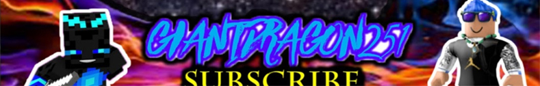

My Gaming Channel
How It Started
I'd been wanting to set up a gaming channel for a while after I got my Minecraft Account. Since I couldn't really think of anything for a name, I went with my gamertag at the time: Giantdragon251 (I was 12 at the time; cut me some slack). How did I come up with such a ridiculous name? Well, it's a long story. I was sitting in front of the page that tells you to type a name, and it was more than blatant that I was overthinking it just a tad. Even to the point where I had a conversation with myself about what sounded cool or not. This lead me to think about dragons. They were cool enough, right? Then I needed something to go in front of it.... Giant! Now, to top it off, it needed numbers at the end... 2... 5... 1..? Yeah, that'll work! And thus, Giantdragon251 was born! But I digress; back to the subject at hand here!
The creation of the channel ironically wasn't to start making videos right away. The actual reason for its creation was to leave a comment on a video that some friends and I had made for a video editing class (which sadly no longer is on YouTube )= ). The idea behind the naming is the same as above. I couldn't think of anything else so I just named it after my gamertag. I didn't actually upload my first video until about a year later, when I finally mustered up enough courage to get behind the microphone for the first time.
Now that I actually decided to start my channel, I needed some videos. After I told my friend, who was named Starfox_658 at the time about my plan to start up my gaming channel, he asked if he could join me in some of the videos, to which I agreed.
We decided on a specific date to do it, and we ended up recording about 3-6 videos, which unfortunately never ended up being uploaded because you couldn't hear Starfox's voice. After that failure, I tried again a few days later by myself, to which it was kind of a success. This is the point where my channel actually started.
My first gaming video (It's pure cringe)
Now that I had an actual video, I needed to upload it, so I did. That video can be seen to the left. Looking back, it's in no way, shape, or form a good video. The quality is lacking, the commentary is cringe, and I clearly had no idea what I was doing. Regardless, I had my first video, and this is where it started. At the time, I only posted minecraft, as that was the only game that I could record due to me not having the best computer.
For a while afterwards, I didn't have a profile pic or banner. The only thing on the channel were videos. That is, until my friend, Knavery5 came up to me and said that she'd made a banner for me. That banner can be seen above, and for a while, it was also my profile picture as well.
Fast forward about 3 weeks later, I'd finally found a recorder other than Bandicam, meaning two things: No more videos that were limited to 10 minutes, and no more watermark at the top of the video. The recording software is known as Open Broadcaster Software, or OBS, which is now known as OBS Studio. With this new recording software, also came another change: I started editing the videos. Since I had one: a very low-end pc, and 2: no money, I was only able to resort to Windows Movie Maker at the time. While it was a decent editor, it was very limited, but at the time it was more than enough for me.
My first video containing music
After around 3 months went by, the overall quality of the videos had increased once more. The commentary wasn't as bad, the editing was more efficient, and I'd finally started outting music in the background of the videos. The first video with music did have the music slightly too loud, as it usually does when people do this for the first time, but the reason wasn't because I didn't know how to lower the volume. While editing the video, Movie Maker crashed, thus causing me to have to re-edit the entire thing. However, during the re-edit, it didn't occur to me that I forgot to lower the volume again until it was too late. That video can be seen to the right.
After that mistake, I made sure to correct it for the rest of the videos from there forward. However, this same mistake would once again occur when I finally switched to a better editing software, the same software that I still use to this day: Wondershare Filmora. However, the second video where this occurs is no longer on YouTube.
When I finally got a new gaming pc, 2 things happened. The first thing, as I mentioned above, was that I got a newer, and much better quality video editor: Wondershare Filmora. The second thing, was that I had finally started doing some work with photo editing. Although, the photo editor I was using at the time wasn't Photoshop, Medibang Pro, or anything in that area. The photo editor I used, was also Wondershare Filmora. The way it was set up, I could do some decent editing of the images, so I used it as a double whammy. After editing the images in Filmora, I would overlay the images in the correct places, then export it as a video, then screenshot it, and bam! Thumbnail. It wasn't as efficient as i could get, but I wasn't about to start spending money on anything expensive like Photoshop.
Not long after I'd started using this method, I'd started doing some minor 3D animating on my Minecraft character. This was a big step for me, since I could use it to do even more with my channel.
The first gaming banner I made for myself
.jpg)
A slightly edited version of the new gaming banner
A completely overhauled version of my gaming banner
After I'd gotten the hang of my animation software, Blender, I finally decided to make a new banner while incorporating my own version of my 3D animated character. This was also a test to see if it would be better quality than the one that Knaver5 made for me. This banner can be seen to the left.
After I uploaded the new banner, it didn't take long for me to start to feel dissatisfied with how it turned out in the end. So, I re-made it. I did all the same steps as before. I re-animated my character, re-edited the images with Filmora, oveylayed them in a similar spot, etc. The only things that I did differently this time was change the font of the text, and animate my character ever-so-slightly different. I don't really know why changing those things specifically were enough to satisfy me st the time, but regardless this became my new banner for a while. This banner is also on the left.
Fast Forward about a year and a half later, I finally had started to take a digital media class that helped me learn how do use Photoshop. With this now in play, I decided to give photoshop a try for myself. While I still had to fiddle around with it a bit to get it to work, I found this method to be much quicker (and higher quality), and then began to question why I didn't just get Photoshop to begin with, seeing as it only took me a few minutes to figure out what did what. But I digress! The point of this section is that I was able to completely overhaul the banner. Once again, this banner can be seen to the left.
Despite having re-created the my gaming banner with the same name, it was around this time when I actually started questioning why I hadn't changed my ridiculous name from when I was 12. I already had another name at the time, too, which I was considering changing it to. In the end, I decided to go through with it, and thus, XDragonMCPlayzX was born!